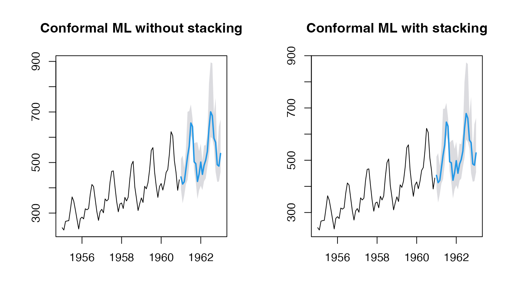
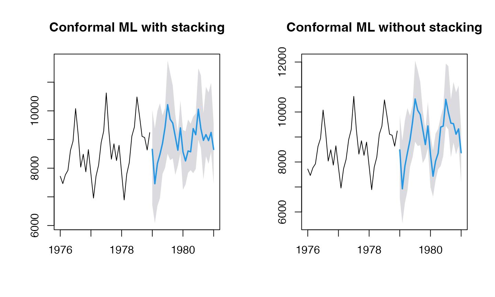

With GLMNET
(res1 <- ahead::mlf(AirPassengers, h=25L, lags=20L, fit_func=glmnet::cv.glmnet, stack=FALSE))
## Registered S3 method overwritten by 'quantmod':
## method from
## as.zoo.data.frame zoo
## Point Forecast Lo 95 Hi 95
## Jan 1961 443.0678 393.7326 514.4272
## Feb 1961 414.7029 338.5769 527.4746
## Mar 1961 423.6345 370.1973 478.9656
## Apr 1961 473.6547 413.9696 551.4670
## May 1961 523.6948 431.6100 700.8098
## Jun 1961 564.6565 491.0847 703.3658
## Jul 1961 656.3814 608.5506 729.6574
## Aug 1961 642.1415 586.2264 675.3550
## Sep 1961 502.7665 467.1685 575.9367
## Oct 1961 495.4584 420.4094 579.7000
## Nov 1961 425.1137 355.5423 579.6025
## Dec 1961 454.3835 390.2147 544.8027
## Jan 1962 501.8453 407.9907 574.0312
## Feb 1962 453.1039 391.2417 505.5730
## Mar 1962 488.9754 425.9775 567.5395
## Apr 1962 509.5831 437.3984 568.3203
## May 1962 544.1932 482.9652 612.8110
## Jun 1962 635.3842 523.7425 813.3856
## Jul 1962 700.5764 601.2327 896.1118
## Aug 1962 685.2017 595.0555 893.0006
## Sep 1962 596.3981 562.4563 691.2545
## Oct 1962 579.3411 462.4507 755.3453
## Nov 1962 491.5268 423.4485 535.3190
## Dec 1962 485.8111 424.7284 642.7474
## Jan 1963 535.8302 462.2427 670.0363
(res2 <- ahead::mlf(AirPassengers, h=25L, lags=20L, fit_func=glmnet::cv.glmnet, stack=TRUE))
## Point Forecast Lo 95 Hi 95
## Jan 1961 442.2072 392.8720 513.5666
## Feb 1961 414.2134 338.0874 526.9851
## Mar 1961 422.7421 369.3050 478.0732
## Apr 1961 470.9081 411.2231 548.7204
## May 1961 519.6793 427.5945 696.7943
## Jun 1961 558.3185 484.7468 697.0279
## Jul 1961 645.9567 598.1259 719.2328
## Aug 1961 630.2959 574.3808 663.5093
## Sep 1961 494.1548 458.5568 567.3250
## Oct 1961 490.3689 415.3198 574.6104
## Nov 1961 423.4604 353.8889 577.9492
## Dec 1961 452.9779 388.8091 543.3971
## Jan 1962 498.3296 404.4751 570.5156
## Feb 1962 450.1174 388.2552 502.5865
## Mar 1962 485.2800 422.2822 563.8442
## Apr 1962 502.4562 430.2715 561.1934
## May 1962 534.5519 473.3239 603.1697
## Jun 1962 621.3529 509.7112 799.3543
## Jul 1962 678.8226 579.4789 874.3580
## Aug 1962 660.4133 570.2672 868.2122
## Sep 1962 577.3530 543.4112 672.2094
## Oct 1962 567.0615 450.1711 743.0657
## Nov 1962 485.9141 417.8357 529.7063
## Dec 1962 481.0277 419.9451 637.9641
## Jan 1963 527.9545 454.3670 662.1606
(res3 <- ahead::mlf(USAccDeaths, h=25L, lags=20L, fit_func=glmnet::cv.glmnet, stack=TRUE))
## Warning: Option grouped=FALSE enforced in cv.glmnet, since < 3 observations per
## fold
## Warning: Option grouped=FALSE enforced in cv.glmnet, since < 3 observations per
## fold
## Point Forecast Lo 95 Hi 95
## Jan 1979 8656.213 6717.115 10024.789
## Feb 1979 7456.093 6078.988 9386.662
## Mar 1979 8163.249 6684.534 9992.208
## Apr 1979 8482.795 6955.890 10263.564
## May 1979 8866.428 7797.865 9839.571
## Jun 1979 9429.093 8013.930 10102.694
## Jul 1979 10216.982 8503.577 11754.072
## Aug 1979 9705.843 8280.338 11311.872
## Sep 1979 9573.288 8343.061 10884.759
## Oct 1979 9102.953 7768.382 9857.146
## Nov 1979 8625.148 8084.524 9239.352
## Dec 1979 9407.621 8523.849 10356.613
## Jan 1980 8570.036 7245.771 9334.535
## Feb 1980 8253.322 7429.251 9288.419
## Mar 1980 8601.244 7837.132 9696.299
## Apr 1980 8571.376 7931.190 9550.147
## May 1980 9382.919 7826.444 9797.134
## Jun 1980 9167.011 7972.786 9909.107
## Jul 1980 10055.085 8998.016 11482.535
## Aug 1980 9382.514 8700.391 11242.089
## Sep 1980 8968.980 7607.305 9915.030
## Oct 1980 9172.813 8418.115 10838.680
## Nov 1980 8961.778 8155.250 10639.769
## Dec 1980 9248.700 8573.207 10972.605
## Jan 1981 8654.584 7454.686 9543.450
(res4 <- ahead::mlf(USAccDeaths, h=25L, lags=20L, fit_func=glmnet::cv.glmnet, stack=FALSE))
## Warning: Option grouped=FALSE enforced in cv.glmnet, since < 3 observations per
## fold
## Warning: Option grouped=FALSE enforced in cv.glmnet, since < 3 observations per
## fold
## Point Forecast Lo 95 Hi 95
## Jan 1979 8484.578 6545.479 9853.153
## Feb 1979 6925.259 5548.154 8855.828
## Mar 1979 7835.545 6356.830 9664.504
## Apr 1979 8375.267 6848.361 10156.035
## May 1979 8878.402 7809.839 9851.545
## Jun 1979 9602.309 8187.146 10275.910
## Jul 1979 10521.423 8808.018 12058.513
## Aug 1979 10068.906 8643.401 11674.935
## Sep 1979 9898.343 8668.115 11209.813
## Oct 1979 9292.196 7957.626 10046.390
## Nov 1979 8694.837 8154.213 9309.041
## Dec 1979 9444.761 8560.989 10393.754
## Jan 1980 8315.085 6990.821 9079.584
## Feb 1980 7430.320 6606.249 8465.416
## Mar 1980 8035.288 7271.177 9130.344
## Apr 1980 8349.819 7709.633 9328.590
## May 1980 9396.421 7839.945 9810.635
## Jun 1980 9438.130 8243.905 10180.226
## Jul 1980 10508.157 9451.087 11935.607
## Aug 1980 9978.976 9296.852 11838.550
## Sep 1980 9553.089 8191.414 10499.139
## Oct 1980 9532.941 8778.243 11198.808
## Nov 1980 9110.061 8303.533 10788.052
## Dec 1980 9326.268 8650.775 11050.173
## Jan 1981 8369.193 7169.295 9258.059
AirPassengers forecasting plot
par(mfrow=c(1, 2))
plot(res1, main="Conformal ML without stacking")
plot(res2, main="Conformal ML with stacking")

USAccDeaths forecasting plot
par(mfrow=c(1, 2))
plot(res3, main="Conformal ML with stacking")
plot(res4, main="Conformal ML without stacking")
